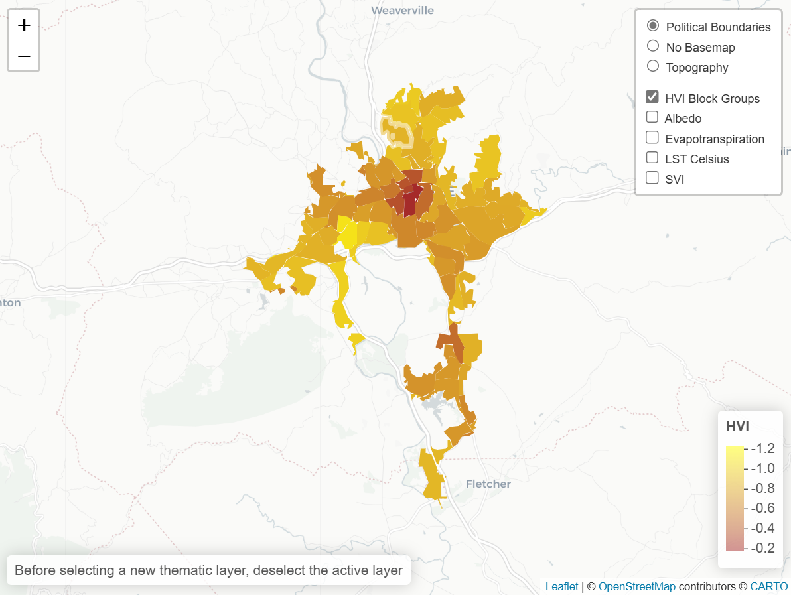
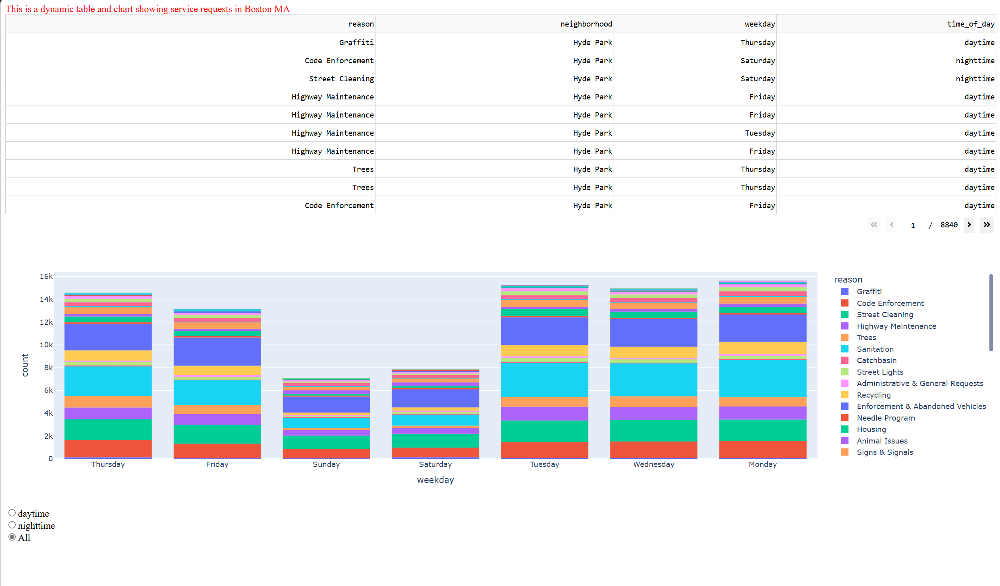
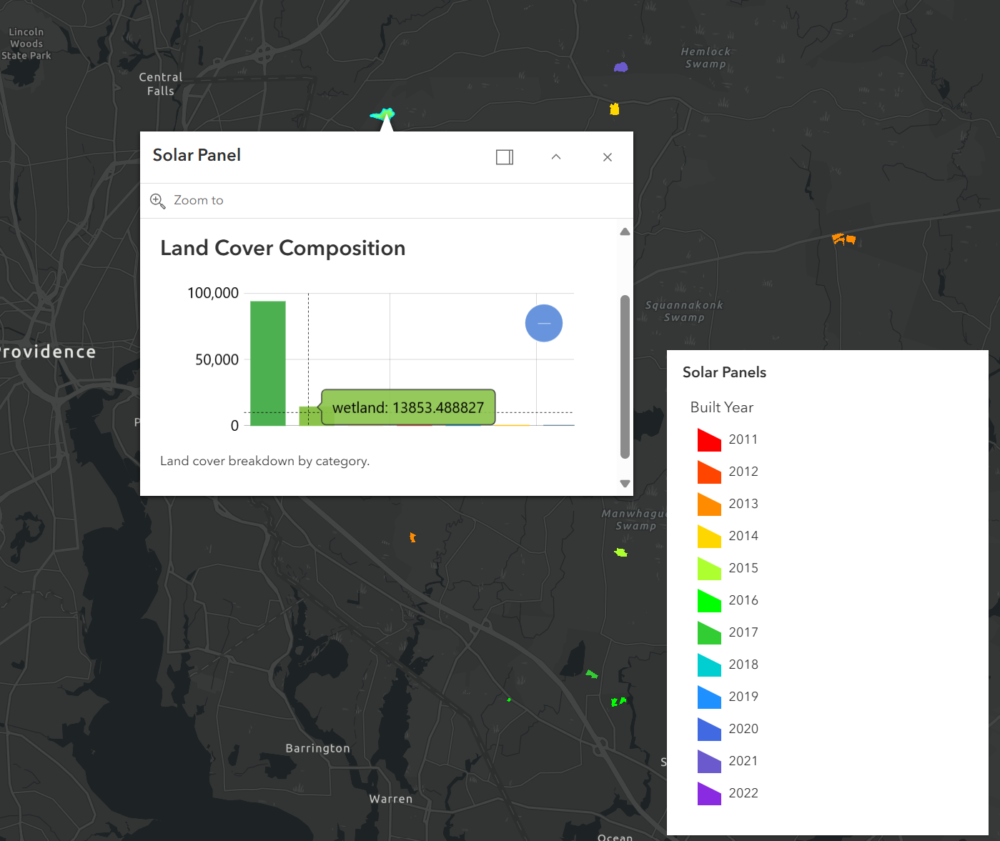
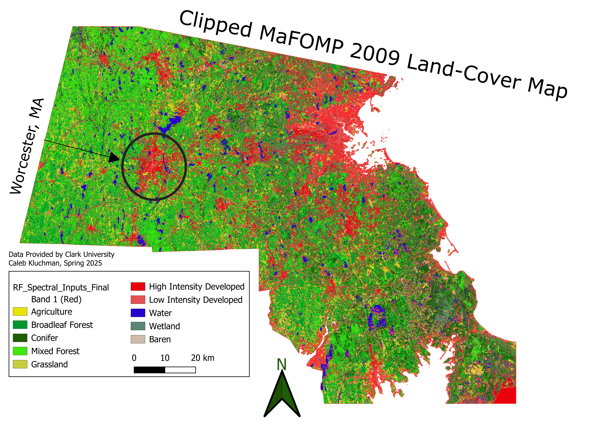
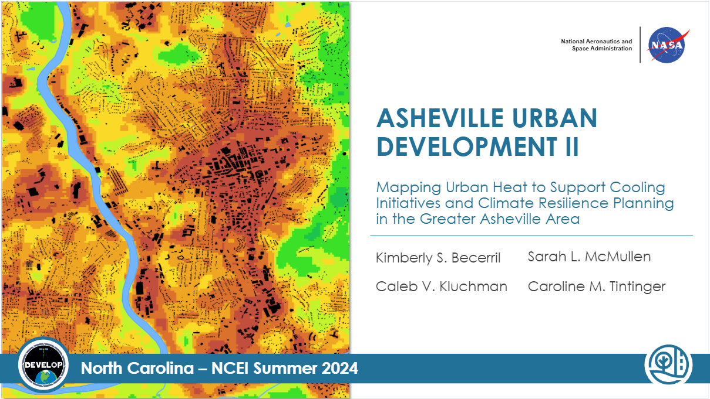
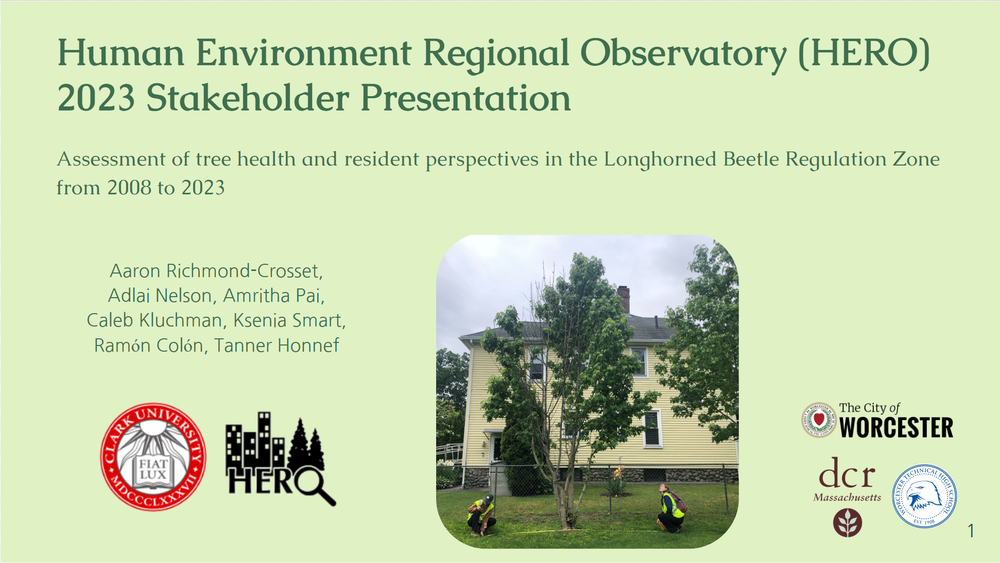
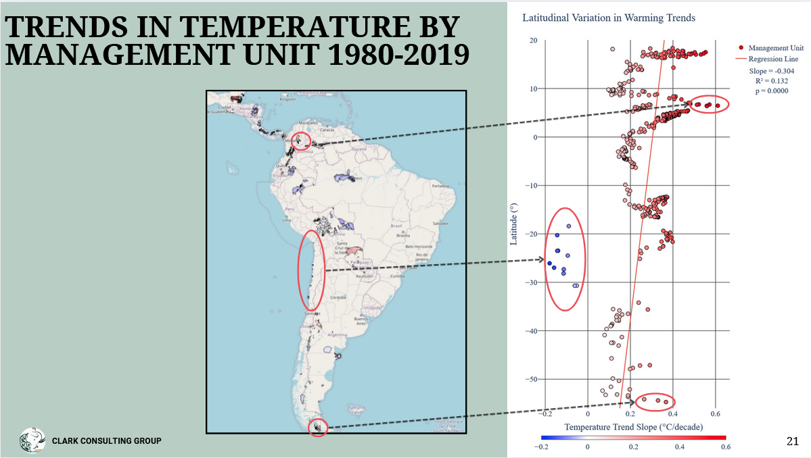
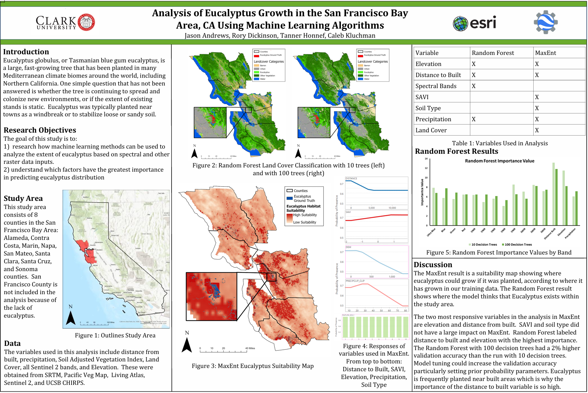
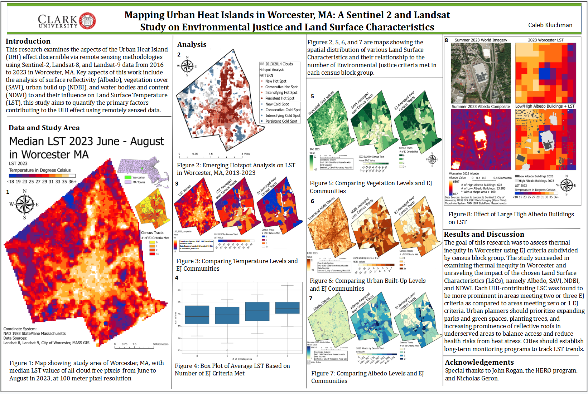

Maps
Interactive: Asheville Urban Heat Index
Interactive web map showing a custom Heat Vulnerability Index, Albedo, Evapotranspiration, Celsius, and the CDC Social Vulnerability Index.
Interactive: Publishing a Dashapp
Interactive app that retrieves and filters service requests in Boston, MA; published using Dash.
Interactive: Large Scale Solar Panels in Providence
Interactive test application of the ArcPy SDK displaying large-scale solar panel data in Providence, RI.
Interactive: Random Forest LULC Classification in R and QGIS
Interactive carousel of Land Use Land Cover maps made with Random Forest in R, mapped in QGIS.
Full Presentations
Urban Heat Island Effect in Asheville NC
Full presentation to the City of Asheville and Asheville Greenworks on the UHI effect in Asheville and Vulnerable Populations for NASA DEVELOP.
Tree Survivorship in Worcester
This presentation was given to the DCR and media on a study conducted with the HERO research fellowship on tree survivorship in Worcester, MA.
Wildlife Conservation Society Presentation
The culmination of my consulting work for the Wildlife Conservation Society (WCS) where our team examined the health, risk, and changes to land use in WCS protected areas in Central and South America.
Posters
Eucalyptus Growth in SF Bay
This was the poster component of my final project for the Advanced Raster GIS course, where I worked with a group to examine Eucalyptus Growth in the SF Bay area using Random Forests in GEE and Maximum Entropy in ArcGIS Pro.
NEARC: Urban Heat Inequality
This poster represented my senior thesis work on urban heat island effects and environmental justice in Worcester, MA, and won a flash talk award at NEARC.
NESTVAL: Urban Tree Survivorship

Award-winning poster for the NESTVAL conference on urban tree survivorship in Worcester, MA after large scale tree removal in 2010 due to the Longhorned Beetle.